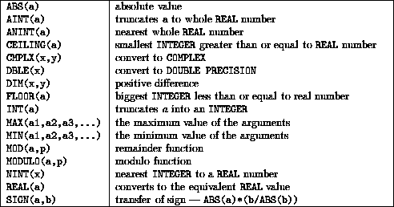

Summary,

As all are elemental they can accept array arguments, the result is the same shape as the argument(s) and is the same as if the intrinsic had been called separately for each array element of the argument.
The argument can be INTEGER, REAL or COMPLEX, the result is of the same type as the argument except for complex where the result is real valued, for example, ABS(-1) is 1, ABS(-.2) is 0.2 and ABS(CMPLX(-3.0,4.0)) is 5.0.
The argument and result are real valued, for example, AINT(1.7) is 1.0 and AINT(-1.7) is -1.0.
The argument and result are real valued, for example, AINT(1.7) is 2.0 and AINT(-1.7) is -2.0.
The argument must be REAL, for example, CEILING(1.7) is 2 CEILING(-1.7) is 1.
The argument must be two real numbers, for example, CMPLX (3.6,4.5) is a complex number.
Arguments must be REAL, INTEGER or COMPLEX. The result is the actual argument converted to a DOUBLE PRECISION number.
Arguments must be REAL or INTEGER. If X bigger than Y then DIM(X,Y) = X-Y, if Y>X and result of X-Y is negative then DIM(X,Y) is zero, for example, DIM(2,7) is 0 and DIM(7,2) is 5.
Actual argument must be numeric, for example INT(8.6) is 8 and INTCMPLX(2.6,4.0) is 2.
These must have at least two arguments which must be INTEGER or REAL. MAX(1.0,2.0) is 2.0.
Arguments must be REAL or INTEGER. MOD(a,p) is the remainder when evaluating a/p, for example, MOD(9,5) is 4, MOD (-9.0,5.0) is -4.0.
Arguments must be REAL or INTEGER. MODULO(a,b) is , for example, MOD(9,5) is 4, MOD(-9.0,5.0) is 1.0.
For example, REAL(5) is 5.0
The arguments are real or integer and the result is of the same type and is equal to ABS(a)*(b/ ABS(b)), for example, SIGN(6,-7) is -6, SIGN(-6,7) is 6.
Now try this question